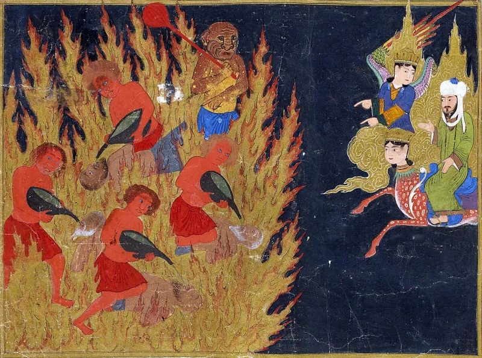
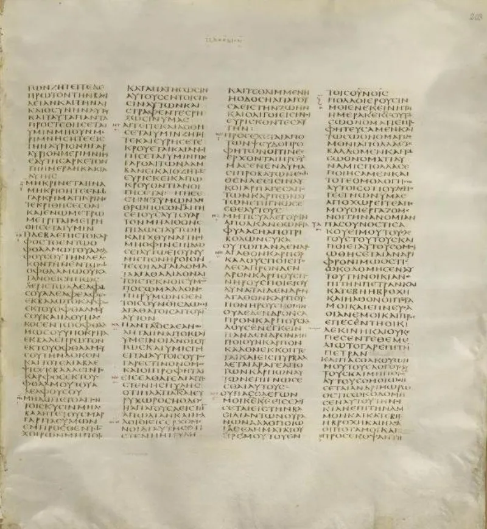

Every Muslim's sins cast on a Jew or Christian
AdmittedThe facts sit in Islam's own trusted sources. You can make this point from their books alone.
The hadith
Sahih Muslim 2767a describes the Day of Resurrection. Allah will give every Muslim a Jew or a Christian, and say: "That is your rescue from Hell-Fire." The parallel reports go further.
Muslims arrive with sins like mountains, and Allah forgives them and places those sins on the Jews and Christians. Sahih Muslim 2767b says: "No Muslim dies but Allah admits in his stead a Jew or a Christian in Hell-Fire."
Why this is striking
It is substitution turned upside down. Someone who did not commit those sins is damned in place of the one who did.
It goes by group, not by choice. There is no consent, and no love in it.
The gospel is its mirror
The sinless one carries sin for the guilty, and does it willingly. "He himself bore our sins in his body on the tree" (1 Peter 2:24).
"The Lamb of God who takes away the sin of the world" (John 1:29). Every heart senses that guilt has to go somewhere.
The two faiths answer with opposite substitutes.
The Muslim answer, at full strength
IslamQA 9488 explains that no one is punished for another's sins, since Quran 6:164 forbids it. The unbeliever enters Hell for his own unbelief.
Ransom, fida', is figurative. Each person has a place in Paradise and a place in Hell.
When a Muslim is forgiven, the unbeliever inherits the empty place in Hell. His own sins had already earned it.
The Muslim inherits the place in Paradise. Al-Nawawi's commentary reads the wording as a picture of the fixed populations of the two homes.
How strong is this argument?
They admit the texts, and only the mechanics are argued. But the harmonisation has to re-explain a sentence that says transfer, not vacancy.
Even granting Al-Nawawi, the picture that remains is stark. Mountain-sized sins are forgiven with no atonement at all, by group membership, with Jews and Christians as the counterweight.
That is mercy without a ground, which is exactly what the cross answers (Romans 3:26).
What to say
"Where do you think your sins go? Mine went somewhere, and someone agreed to take them."



How they answer this — at its strongest
They say no one bears another's sin; the Jew takes the place his own sins earned.
IslamQA 9488 explains that the unbelievers are not punished for the Muslims' sins. That would break the rule that no bearer of burdens bears the burden of another (6:164). The Jew or Christian enters Hell for his own disbelief.
Ransom, or fida', is a figure of speech. Each person has a place in Paradise and a place in Hell. When a Muslim is forgiven, the unbeliever inherits the empty place in Hell. His own sins had already earned it. The Muslim inherits the place in Paradise, as the parallel report in Muslim's collection says. Al-Nawawi's commentary reads the wording as a picture of the fixed numbers in the two homes. So no injustice occurs.
The verdict
Strong for you, and it is a bridge: substitution is the question underneath.
The hadith are sahih Muslim material. IslamQA's harmonisation concedes that the wording needs rescuing. The inherited-places reading has to re-explain one sentence flatly. That sentence says Allah forgives the Muslims and places their sins on the Jews and Christians. It states transfer, not vacancy.
Even granting Al-Nawawi's metaphor, the admitted picture remains. Muslims with mountain-sized sins are forgiven, with no atonement at all, by belonging to a group. Jews and Christians serve as the counterweight. That is mercy without a ground, at the cost of justice. It is exactly the problem the cross answers (Romans 3:26).
It is graded admitted, since the texts and their status are affirmed. Only the mechanics are debated. This is a strong and underused bridge to substitution rightly understood.
Sources
- Sahih Muslim 2767b
- Sahih Muslim 2767a (in context)
- IslamQA 9488 — Meaning of the hadith about sins placed on the People of the Book
- Answering Islam (Shamoun) — How will a Muslim be saved according to the hadiths?
- Street Theologian — Christians: a Muslim's ransom from hell?